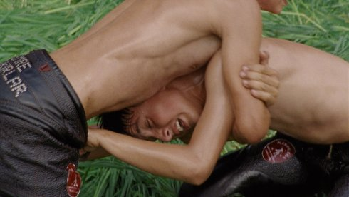

Playing Men

Matjaž Ivanišin
|
60 min – HD – Italian, German, Croatian, Slovenian B: Matjaž Ivanišin – K: Gregor Božič – S: Matic Drakulić – P+V: Marina Gumzi
|
wednesday 17 oct 6.30 pm werkstattkino
At a time when men are under fire globally, this irresistible film provides a breath of fresh air. It’s about playing, about the beauty of the game and the men that play it. They play, deadly seriously, yet with airy joy somewhere by the Mediterranean (Slovenia, Croatia). In a time that may or may not be ours. Wrestling, rolling a cheese through village streets or the rapid-fire reciting of the right numbers are occupations of the highest importance.
Filmmaker Matjaž Ivanišin, Slovenia’s great hope, shot everything with serious lightness until he hit a creative block. Reconstructing a recent sporting event, Croat Goran Ivanišević’s win at Wimbledon in 2001, put his project back on track. That’s how a game should be played, won and celebrated. (IFF Rotterdam 2018)
Matjaž Ivanišin in 1981 in Maribor, Slovenia. Studied film and television directing at AGRFT, Ljubljana.
|
| Films Che Sara 2002 – My Little Sweethearts 2005 – Šentilj - Spielfeld, a Border Crossing that once was 2009 – A House on Jurčkova street 2011 – Karpotrotter 2013 (9. UX)
|